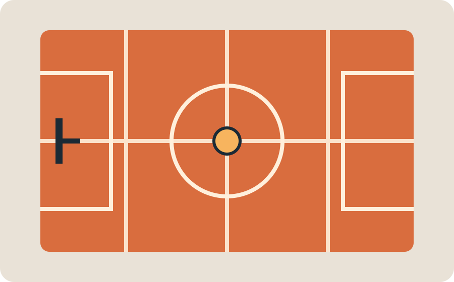

Une journée pour jouer et partager
Le programme
Un déroulé indicatif pour donner de la visibilité aux participants. Les horaires et activités seront ajustés selon le lieu, le nombre d'équipes et les contraintes d'organisation.

Le format sportif
Le tournoi s'organise autour de matchs 3 contre 3 sur demi-terrain. Le règlement définitif précisera la durée des rencontres, les rotations, les critères de classement et les règles de sécurité.
- Accueil et vérification des équipes.
- Échauffement collectif et rappel des règles.
- Phases de poules puis matchs de classement.
- Finale, remise symbolique et clôture.
Déroulé prévisionnel
Exemple de planning sur une journée, à adapter après réservation du site.
| Horaire | Temps fort | Objectif |
|---|---|---|
| 10 h – 10 h 45 | Accueil des équipes | Pointage, informations pratiques et échauffement libre. |
| 10 h 45 – 11 h | Briefing collectif | Présenter les règles, le fair-play et les consignes de sécurité. |
| 11 h – 13 h | Phases de poules | Permettre à chaque équipe de jouer plusieurs rencontres. |
| 13 h – 14 h | Pause et animations | Temps de récupération, échanges et initiation découverte. |
| 14 h – 16 h 30 | Phases finales | Matchs à élimination et classement. |
| 16 h 30 – 17 h 15 | Finales | Mettre en valeur le jeu collectif et l'engagement. |
| 17 h 15 – 18 h | Remise symbolique et clôture | Remerciements, photos avec accord et informations de suivi. |
Le planning est un scénario pédagogique : il devra être recalculé en fonction du nombre d'équipes, des terrains disponibles, des arbitres et des temps de pause.
Vous souhaitez proposer une animation ou aider ?
Nous sommes également intéressés par les bénévoles, associations locales et partenaires qui souhaitent contribuer.